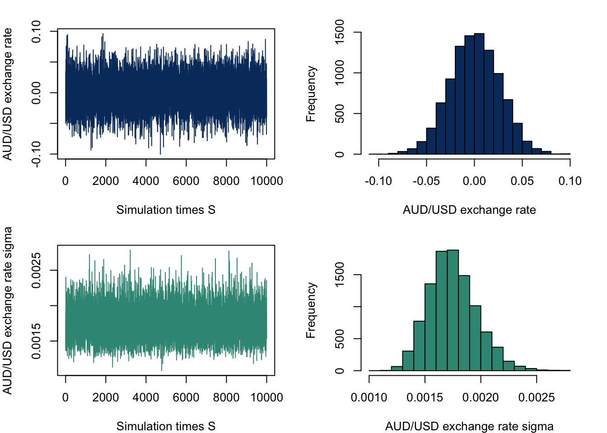
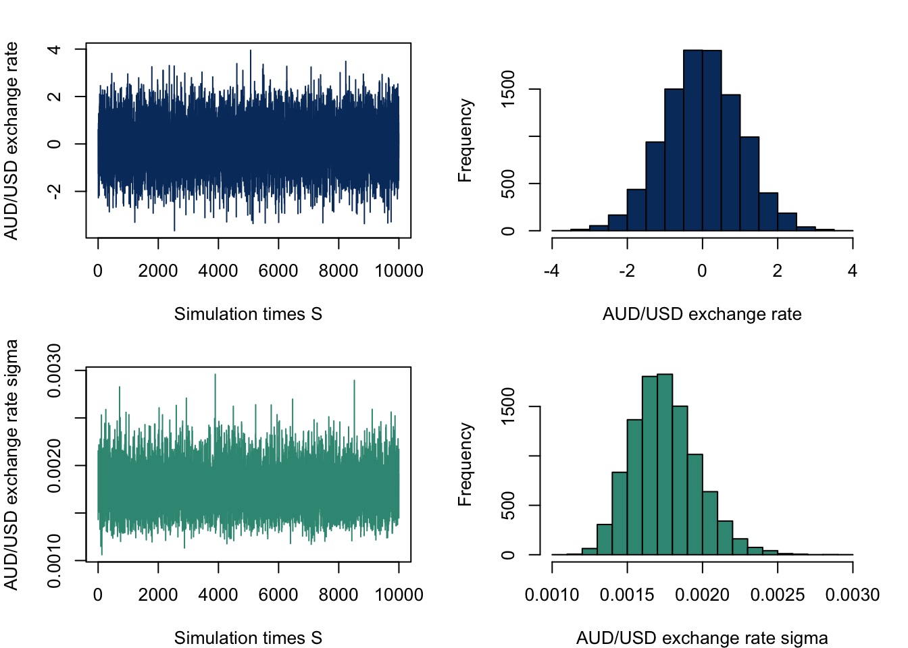

Exchange Rate Forecasting Using Bayesian VARs Model
Abstract. This research report explores how Bayesian VARs model predict AUD/USD exchange rate. Keywords. Bayesian Vars, Exchange rate, Forecasting, Minnesota Prior, Laplace distribution
Objective and Motivation
The objective of this research is to use the Bayesian Vector Autoregressions (VARs) method to forecast the exchange rate of the US dollar exchange rate against the Australian dollar.
The ability to accurately forecast the foreign exchange rate is crucial for Australia’s global trade and investment. Given the prominence of the US dollar as the world’s primary reserve currency, the monetary policies of the US Federal Reserve have a worldwide effect on the world economy, its significant influence on the Australia currency market should be important for domestic investors and policy maker as it can directly impact the AUD/USD exchange rate. Besides, America as one of the major trading partners for Australia, can impact bilateral trade flows and eventually affect the value of the AUD. Apart from the external from foreign countries, the domestic economic indicators can also be one of the determinants of the AUD/USD exchange rate.
The research is aimed to address the question for example, how the AUD/USD exchange rate will be in 3 months or even longer 1 year?
Data and Variables
To better forecast the change in the exchange rate, the 13 variables are selected as follows which contain both domestic and US economic indicators that affect the exchange rate in different ways.
Real GDP and interest rates have a significant effect on the exchange rate, a higher realGDP and interest rate in Australia may increase the demand for AUD, which will lead to an appreciation of AUD and a rise in the AUD/USD exchange rate. A higher CPI indicates a lower purchasing power relative to foreign currency which may lead to a depreciation of the domestic currency. The unemployment rate can in some way represent business activity and a country with a high unemployment rate will lower the attractiveness for foreign investors and weaken the domestic currency competitiveness in the currency market. The balance of trade, which is the difference between exports and imports, also can influence the demand for its currency, a trade surplus in AUD may increase the demand for AUD dollar.
\(erate_{t}\): AUD/USD exchange rate
AUS economic indicators
- \(crate\_au_{t}\): The Cash Rate Target, Australia
- \(rgdp\_au_{t}\): The Real Gross Domestic Product, Australia
- \(cpi\_au_{t}\): The Consumer Price Index, Australia
- \(unemr\_au_{t}\): The Unemployment rate, Australia
- \(impor\_au_{t}\): The Imports of Goods and Services, Australia
- \(expor\_au_{t}\): The Exports of Goods and Services, Australia
US economic indicators
- \(crate\_us_{t}\): The Federal Funds Effective Rate, United States
- \(rgdp\_us_{t}\): The Real Gross Domestic Product, United States
- \(cpi\_us_{t}\): The Consumer Price Index, United States
- \(unemr\_us_{t}\): The Unemployment rate, United States
- \(impor\_us_{t}\): The Imports of Goods and Services, United States
- \(expor\_us_{t}\): The Exports of Goods and Services, United States
Data Cleaning
For the data cleaning part, most data for AUS is from Reserve Bank of Australia (RBA) and Australian Bureau of Statistics (ABS), and data for the US is from FRED, the dataset spans from 1990 Q1 to 2023 Q4, comprising 136 observations. To better fit the model, the data has been transformed to ‘quarter’ to ensure that seasonality effects are removed and logged transformations have been applied to most data except exchange rate and cash rate to reducing outlier effects.
Visualisation of data
Plot the variables to see the patterns of data. It shows from the plots that the exchange rate and cash rate for the US fluctuate over time, the cash rate and unemployment for AU show a downward trend and all other variables have a clear upward trend, with the exports、imports, and GDP for both countries have a clear drop during the COVID-19 period.
Since most variables show a non-stationary pattern. To determine whether a unit root is present in a time series dataset, the ADF test will be conducted below.
Augmented Dickey-Fuller test for log transformed variables except exchange rates and cash rates.
From the plot we can observe all ACF plots have a high degree of persistence over time, indicating there is significant autocorrelation in the time series data.

Below is the p-value of each variable and only the cash rate for AUS has a p-value less than 0.05 which indicates that \(crateau_{t}\) is stationary.
| P-value | |
|---|---|
| exchange rate | 0.671 |
| cpi_au | 0.214 |
| cpi_us | 0.410 |
| cashrate_au | 0.010 |
| cashrate_us | 0.047 |
| export_au | 0.431 |
| export_us | 0.365 |
| import_au | 0.095 |
| import_us | 0.603 |
| realgdp_au | 0.961 |
| realgdp_us | 0.633 |
| unemployemtrate_au | 0.419 |
| unemployemtrate_us | 0.328 |
Below is the ADF test result for all non-stationary data taking the first difference. All variables in the first differences are stationary as the null hypothesis of non-stationary can be rejected.
| P-value | |
|---|---|
| exchange rate | 0.010 |
| cpi_au | 0.027 |
| cpi_us | 0.012 |
| cashrate_us | 0.012 |
| export_au | 0.010 |
| export_us | 0.010 |
| import_au | 0.010 |
| import_us | 0.010 |
| realgdp_au | 0.010 |
| realgdp_us | 0.010 |
| unemployemtrate_au | 0.010 |
| unemployemtrate_us | 0.010 |
It can be concluded that all variables are integrated at 1 at the 5% significance level of the ADF test, with the conclusion folding for \(crate\_au_{t}\) only at 1% significance level. Appropriate prior distributions will be used to accommodate this fact for the VAR model.
Model and Hypotheses
In this research, the VAR(p) model will be applied to forecast the AUD/USD exchange rate, below is the basic model that is used in this research.
The basic VAR(p) model
\[\begin{aligned} y_{t}=\mu_{0}+A_{1}y_{t-1}+\cdots+A_{p}y_{t-p}+\epsilon_{t} \\ \epsilon_{t}|Y_{t-1} \sim iid\mathcal{N}(0_{13},\Sigma) \end{aligned}\]For time \(t\) = 1,2,…..,\(T\)：
- \(y_t\) is a \(N(13)\times 1\) vector of observations at time \(t\)
- \(\mu_0\) is a \(N(13)\times 1\) vector of constant terms
- \(A_i\) is a \(N(13)\times N(13)\) matrix of autoregressive slope parameters
- \(\epsilon_t\) is a \(N(13)\times 1\) vector of error terms and follows a multivariate white noise process
- \(Y_{t-1}\) is the information set collecting observations on y up to time \(t-1\)
- \(\Sigma\) is a \(N(13)\times N(13)\) covariance matrix of the error term
For further research, we may use the predictive density function like 3-year-ahead forecast and forecast with Bayesian VARS.
Modelling Framework
The basic model
\[\begin{align} Y &=XA+U\\ U|X&\sim \mathcal{MN}_{T\times N}(0, \Sigma, I_T)\\ Y|X,A,\Sigma&\sim \mathcal{MN}_{T\times N} (XA, \Sigma, I_T) \end{align}\]Where \(Y\) is a \(T\times 13\) Matrix, \(X\) is a \(T\times(1+p\times13)\), \(A\) is a \((1+p\times13)\times13\) matrix that contains \(\mu_{0}\) and vectors of the autoregressive slope parameters and \(U\) is a \(T\times13\) matrix contains vetors of error terms.
The kernel of the likelihood function:
\[\begin{align} L(A,\Sigma|Y,X) \propto det(\Sigma)^{-\frac{T}{2}}exp\{-\frac{1}{2}tr[\Sigma^{-1}(Y-XA)'(Y-XA)]\} \end{align}\]The basic model is based on Natural-conjugate prior distribution, where the \(A\) follows a Matrix-variate Normal distribution and \(\Sigma\) follows an Inverse Wishart distribution.
\[\begin{align} p(A,\Sigma) &= p(A|\Sigma)p(\Sigma) \\ A|\Sigma &\sim \mathcal{MN}_{K \times N}(\underline{A},\Sigma,\underline{V}) \\ \Sigma &\sim \mathcal{IW}_N(\underline{S},\underline{\nu}) \end{align}\]The Minnesota prior is typically a good choice for specifying priors in BVAR model especially when the model involves many macroeconomic variables. It assumes the variables follow a random walk and it is suitable for unit root non-stationary variables such as in our case, variables are integrated at 1 at the 5% significance level of the ADF test, where:
\[\begin{align} \underline{A} &= \begin{bmatrix}0_{N \times 1} & I_{N} & 0_{N \times (p-1)N}\end{bmatrix}'\\ \underline{V} &= diag( \begin{bmatrix} \kappa_2 & \kappa_1(p^{-2}\otimes I_N') \end{bmatrix}) \end{align}\]The prior mean \(\underline{A}\) for the first lag of each variable (the identity matrix portion) is one, while all other coefficients including intercepts, are zeroes. For the column-specific prior covariance \(\underline{V}\), two shrinkage hyper-parameters \(\kappa_1\) and \(\kappa_2\) represent the overall shrinkage level for slopes and constant terms respectively.
For posterior distribution, the kernel of the posterior distribution takes the form of the product of the likelihood and the prior distributions.
\[\begin{align*} p(A,\Sigma|Y,X) &\propto L(A,\Sigma|Y,X)p(A,\Sigma) \\ &= L(A,\Sigma|Y,X)p(A|\Sigma)p(\Sigma) \end{align*}\] \[\begin{align} p(A,\Sigma|Y,X) &\propto \det(\Sigma)^{-\frac{T}{2}} \\ &\times exp\{-\frac{1}{2}tr[\Sigma^{-1}(Y-XA)'(Y-XA)]\} \\ &\times \det(\Sigma)^{-\frac{N+K+\underline{v}+1}{2}} \\ &\times exp\{-\frac{1}{2}tr[\Sigma^{-1}(A-\underline{A}) \underline{V}^{-1}(A-\underline{A})]\} \\ &\times exp\{-\frac{1}{2}tr[\Sigma^{-1}\underline{S}]\} \end{align}\]The kernel can be represent as the normal-inverse Wishart distribution and we can get the following full conditional joint posterior distribution:
\[\begin{align} p(A|Y,X,\Sigma) &= \mathcal{MN}_{K \times N}(\bar{A}, \Sigma, \bar{V}) \\ p(\Sigma|Y,X) &= \mathcal{IW}_N(\bar{S},\bar{\nu}) \\ \\ \bar{V} &= (X'X + \underline{V}^{-1})^{-1} \\ \bar{A} &= \bar{V}(X'Y + \underline{V}^{-1}\underline{A}) \\ \bar{\nu} &= T + \underline{\nu} \\ \bar{S} &= \underline{S} + Y'Y + \underline{A}'\underline{V}^{-1}\underline{A} - \bar{A}'\bar{V}^{-1}\bar{A} \\ \end{align}\]## Posterior sample draw
posterior.draws = function (S, Y, X, A.prior, V.prior, S.prior, nu.prior){
# normal-inverse Wishard posterior parameters
V.bar.inv = t(X)%*%X + diag(1/diag(V.prior))
V.bar = solve(V.bar.inv)
A.bar = V.bar%*%(t(X)%*%Y + diag(1/diag(V.prior))%*%A.prior)
nu.bar = nrow(Y) + nu.prior
S.bar = S.prior + t(Y)%*%Y + t(A.prior)%*%diag(1/diag(V.prior))%*%A.prior - t(A.bar)%*%V.bar.inv%*%A.bar
S.bar.inv = solve(S.bar)
# posterior draws
Sigma.posterior = rWishart(S, df=nu.bar, Sigma=S.bar.inv)
Sigma.posterior = apply(Sigma.posterior,3,solve)
Sigma.posterior = array(Sigma.posterior,c(N,N,S))
A.posterior = array(rnorm(prod(c(dim(A.bar),S))),c(dim(A.bar),S))
L = t(chol(V.bar))
for (s in 1:S){
A.posterior[,,s]= A.bar + L%*%A.posterior[,,s]%*%chol(Sigma.posterior[,,s])
}
output = list(A.posterior=A.posterior, Sigma.posterior=Sigma.posterior)
return(output)
}Estimation Outcomes on Basic Model
head(round(apply(posterior.sample.draws$A.posterior, 1:2, mean),6)) # posterior draw A [,1] [,2] [,3] [,4] [,5] [,6] [,7]
[1,] -0.000065 4.393479 4.379507 4.322870 3.109329 9.393156 7.134650
[2,] 0.999953 0.000242 0.000198 0.000952 -0.002938 0.000597 0.000801
[3,] -0.000018 0.001903 0.001728 -0.012052 -0.009131 0.004610 0.003761
[4,] -0.000009 0.001763 0.001617 -0.010546 -0.007539 0.004364 0.003498
[5,] -0.000032 -0.012197 -0.011085 0.165779 0.089862 -0.030050 -0.023661
[6,] -0.000232 -0.009516 -0.008072 0.097602 0.164954 -0.023272 -0.018085
[,8] [,9] [,10] [,11] [,12] [,13]
[1,] 9.350763 7.400268 12.776791 9.592615 6.399594 5.077620
[2,] 0.000637 0.000655 0.000270 0.000141 -0.001146 0.003952
[3,] 0.005268 0.003939 0.002342 0.001804 -0.010968 -0.001805
[4,] 0.004948 0.003739 0.002214 0.001725 -0.010982 -0.002467
[5,] -0.034266 -0.024120 -0.014915 -0.011523 0.047572 0.026204
[6,] -0.024277 -0.019804 -0.011412 -0.008103 0.045282 -0.062060head(round(apply(posterior.sample.draws$Sigma.posterior, 1:2, mean),6)) # posterior draw sigma [,1] [,2] [,3] [,4] [,5] [,6] [,7]
[1,] 0.001744 -0.000222 -0.000203 0.003388 -0.003713 -0.001053 -0.001388
[2,] -0.000222 0.035843 0.032494 -0.221025 -0.173022 0.087174 0.070890
[3,] -0.000203 0.032494 0.029826 -0.197727 -0.144431 0.080192 0.064603
[4,] 0.003388 -0.221025 -0.197727 3.156893 1.824037 -0.535259 -0.425632
[5,] -0.003713 -0.173022 -0.144431 1.824037 3.454357 -0.426593 -0.331317
[6,] -0.001053 0.087174 0.080192 -0.535259 -0.426593 0.222599 0.177865
[,8] [,9] [,10] [,11] [,12] [,13]
[1,] -0.002123 -0.000869 -0.000223 -0.000162 -0.001155 0.011375
[2,] 0.099222 0.074344 0.044465 0.034232 -0.207662 -0.034843
[3,] 0.090888 0.068666 0.040791 0.031652 -0.199186 -0.039388
[4,] -0.623161 -0.423506 -0.268601 -0.205256 0.724093 0.333177
[5,] -0.441620 -0.362079 -0.209438 -0.148299 0.825929 -1.284683
[6,] 0.245494 0.192669 0.109971 0.085755 -0.589570 -0.104457par(mfrow=c(2,2), mar=c(4,4,2,2))
plot.ts(posterior.sample.draws$A.posterior[1,1,], xlab = "Simulation times S", ylab = "AUD/USD exchange rate", col = mcxs1)
hist(posterior.sample.draws$A.posterior[1,1,], xlab = "AUD/USD exchange rate", col = mcxs1, main = '')
plot.ts(posterior.sample.draws$Sigma.posterior[1,1,], xlab = "Simulation times S", ylab = "AUD/USD exchange rate sigma", col = mcxs2)
hist(posterior.sample.draws$Sigma.posterior[1,1,], xlab = "AUD/USD exchange rate sigma", col = mcxs2, main = '')
The trace plots and the histogram plot of posterior draws of\(A\) and \(\Sigma\) is presented above with the trace plots shows significant volatility.
The Extended Model
The extended model will be built based on the the change in distribution of the error to Laplace distribution instead of the normally distributed errors assumption. The Laplace distribution is suitable for describing financial anomalies due to its sharp peaks and thick tails and the use of this distribution improves the robustness of the model to anomalies and is particularly suitable for financial time series. As our variables are most financial time series data, a Laplace distribution is more suitable to apply to our error term.
Following Eltoft,Kim, and Lee 2006b, for covariance with a general Kronecker structure, if each \({\lambda_t}\) has an independent exponential distribution with mean \({\alpha}\), then marginally \({U_t}\) has a multivariate Laplace distribution with mean vector 0 and covariance matrix \({\alpha\Sigma}\).
\[\begin{align} vec(U)&\sim N(0,\Sigma\otimes \Omega)\\ U_t &\sim \text{Laplace}(0, \alpha\Sigma) \\ U_t | \lambda_t &\sim \mathcal{MN}(0, \Sigma, \Omega) \\ \lambda_t &\sim \text{Exponential}(\frac{1}{\alpha}) \end{align}\]The model is where \(\Omega=diag(\lambda_1,\lambda_2,...,\lambda_t)\), each lambda independently drawn from an exponential distribution.
The kernel of the likelihood function now is :
\[\begin{align} L(A,\Sigma,\Omega |Y,X) &\propto \det(\Sigma)^{-\frac{T}{2}} \det(\Omega)^{-\frac{N}{2}} exp\{-\frac{1}{2} tr[\Sigma^{-1} (Y-XA)' \Omega^{-1} (Y-XA) ]\}\\ &=\det(\Sigma)^{-\frac{T}{2}}\prod^{T}_{t = 1} \lambda_t^{-\frac{N}{2}} exp({-\frac{1}{2}}\sum^{T}_{t =1}{\frac{1}{\lambda_t}} \epsilon_t' \Sigma^{-1}\epsilon_t)\\ &=\det(\Sigma)^{-\frac{T}{2}}\prod^{T}_{t = 1}( \lambda_t^{-\frac{N}{2}} exp({-\frac{1}{2}}{\frac{1}{\lambda_t}} \epsilon_t' \Sigma^{-1}\epsilon_t)) \end{align}\]Thence, for each time t, we have the likelihood like:
\[\begin{align} &=\lambda_t^{-\frac{N}{2}} exp({-\frac{1}{2}}{\frac{1}{\lambda_t}} \epsilon_t' \Sigma^{-1}\epsilon_t) \end{align}\]For posteriors distribution, \(A\), \(\Sigma\) and \(\lambda_t\) can then be derived using the likelihood and the prior distributions as follows:
\[\begin{align} p(A,\Sigma|Y,X) &\propto L(A,\Sigma,\lambda_t|Y,X)p(A,\Sigma) \\ \\ &= \det(\Sigma)^{-\frac{T}{2}} \det(\Omega)^{-\frac{N}{2}} exp\{-\frac{1}{2} tr[\Sigma^{-1} (Y-XA)' \Omega^{-1} (Y-XA) ]\} \\ &\times \det(\Sigma)^{-\frac{N+k+\underline{\nu}+1}{2}} exp\{-\frac{1}{2}tr[\Sigma^{-1}(A-\underline{A})'(\underline{V})^{-1}(A-\underline{A})]\} \\ &\times exp\{-\frac{1}{2}tr[\Sigma^{-1}\underline{S}]\} \\ &= \det(\Sigma)^{-\frac{T+N+K+\underline{\nu}+1}{2}} \det(\Omega)^{-\frac{N}{2}} \\ &\times exp\{-\frac{1}{2} tr[\Sigma^{-1}(Y'\Omega^{-1}Y - 2A'X'\Omega)^{-1}Y + A'X'\Omega^{-1}XA \\ &+ A'\underline{V}^{-1}A -2A'\underline{V}^{-1}\underline{A} + \underline{A}'\underline{V}^{-1}\underline{A} + \underline{S})]\} \end{align}\]The kernel can be rearranged in the form of the Matrix-variate normal-inverse Wishart distribution.
\[\begin{align} p(A,\Sigma|Y,X) &\sim MNIW(\bar{A},\bar{V},\bar{S},\bar{\nu}) \\ &\\ \bar{V} &= (X'\Omega^{-1}X + \underline{V}^{-1})^{-1} \\ \bar{A} &= \bar{V}(X'\Omega^{-1}Y + \underline{V}^{-1}\underline{A}) \\ \bar{\nu} &= T + \underline{\nu}\\ \bar{S} &= Y'\Omega^{-1}Y + \underline{A}'\underline{V}^{-1}\underline{A} + \underline{S} - \bar{A}'\bar{V}^{-1}\bar{A} \end{align}\]The prior distribution of \[\lambda_t \sim \text{Exponential}(\frac{1}{\alpha})\] define as:
\[\begin{align} p(\lambda_t|\alpha) &= \frac{1}{\alpha}exp\{ -\frac{1}{\alpha}\lambda_t \}\\ \end{align} \]The kernel of the fully conditional posterior distribution of \(\lambda_t\) is then derived as follows:
\[\begin{align} p(\lambda_t|Y,X,A,\Sigma) &\propto L(A,\Sigma,\lambda_t|Y,X)p(\lambda_t) \\ \\ &\propto \lambda_t^{-\frac{N}{2}}exp({-\frac{1}{2}}{\frac{1}{\lambda_t}}\epsilon_t' \Sigma^{-1}\epsilon_t) \\ &\times \frac{1}{\alpha}exp\{ -\frac{1}{\alpha}\lambda_t \}\\ &= \lambda_t^{-\frac{N}{2}+1-1} exp\{-\frac{1}{2}[\frac{ \epsilon_t' \Sigma^{-1}\epsilon_t} {\lambda_t} +\frac{2}{\alpha}\lambda_t]\} \end{align}\]The above expression can be rearranged in the form of a Generalized inverse Gaussian distribution kernel as follows:
\[\begin{align} \lambda_t|Y,A,\Sigma &\sim GIG(a,b,p) \\ \\ a &=\frac{2}{\alpha} \\ b &= \epsilon_t' \Sigma^{-1}\epsilon_t \\ p &= -\frac{N}{2}+1 \end{align}\]The Gibbs sampler method will be applied to generate random draws from the full conditional posterior distribution:
- Draw \(\Sigma^{(s)}\) from the \(IW(\bar{S},\bar{\nu})\) distribution.
- Draw \(A^{(s)}\) from the \(MN(\bar{A},\Sigma^{(s)}, \bar{V})\) distribution.
- Draw \(\lambda_t^{(s)}\) from \(GIG(a,b,p)\).
Repeat steps 1, step 2 and 3 for \(S_1\)+\(S_2\)times.
Discard the first draws that allowed the algorithm to converge to the stationary posterior distribution.
Output is \(\left\{ {A^{(s)}, \Sigma^{(s)}}, \lambda_t^{(s)}\right\}^{S_1+S_2}_{s=S_1+1}\).
posterior.draws.extended <- function(S1,total_S,Y, X, A.prior, V.prior, S.prior, nu.prior, lambda.priors){
Sigma.posterior.draws = array(NA, c(N,N,total_S))
A.posterior.draws = array(NA, c((1+p*N),N,total_S))
lambda.posterior.draws = array(NA,c(T,total_S+1))
for (s in 1:total_S){
if (s == 1) {
lambda.s = lambda.0
} else {
lambda.s = lambda.posterior.draws[,s]
}
Omega = (diag(lambda.s))
Omega.inv = diag(1/lambda.s)
V.bar.inv.ext = t(X)%*%Omega.inv%*%X + V.prior.inv
V.bar.inv.ext = 0.5 * (t(V.bar.inv.ext) + V.bar.inv.ext)
V.bar.ext = solve(V.bar.inv.ext)
V.bar.ext = 0.5 * (t(V.bar.ext) + V.bar.ext)
A.bar.ext = V.bar.ext%*%(t(X)%*%Omega.inv%*%Y + V.prior.inv%*%A.prior)
nu.bar.ext = T + nu.prior
S.bar.ext = S.prior + t(Y)%*%Omega.inv%*%Y + t(A.prior)%*%V.prior.inv%*%A.prior - t(A.bar.ext)%*%V.bar.inv.ext%*%A.bar.ext
S.bar.ext = 0.5 * (t(S.bar.ext) + S.bar.ext)
S.bar.ext.inv = solve(S.bar.ext)
S.bar.ext.inv = 0.5 * (t(S.bar.ext.inv) + S.bar.ext.inv)
Sigma.inv.draw = rWishart(1, df = nu.bar.ext, Sigma = S.bar.ext.inv)[,,1]
Sigma.posterior.draws[,,s] = solve(Sigma.inv.draw)
A.posterior.draws[,,s] = matrix(mvtnorm::rmvnorm(1, mean=as.vector(A.bar.ext), sigma = Sigma.posterior.draws[,,s] %x% V.bar.ext), ncol=N)
u.t = Y-X%*%A.posterior.draws[,,s]
# ---- loop lambda posterior ---- #
c = -N/2 + 1 # N=13
a = 2 / lambda.priors$alpha
for (x in 1:T){
b = t((u.t)[x,])%*% Sigma.inv.draw %*%(u.t)[x,]
lambda.posterior.draws[x,s+1] = GIGrvg::rgig(1, lambda = c, chi = b, psi = a)
} # END x loop
} # END s loop
output = (list(A.posterior.exten = A.posterior.draws[,,S1:total_S],
Sigma.posterior.exten = Sigma.posterior.draws[,,S1:total_S],
lambda.posterior.exten = lambda.posterior.draws[,(S1+1):(total_S+1)]))
}Estimation Outcomes on Extended Model
head(round(apply(posterior.ext$A.posterior.exten, 1:2, mean),6)) [,1] [,2] [,3] [,4] [,5] [,6] [,7]
[1,] 0.001184 0.005815 0.007066 0.006149 0.126937 0.016707 0.013198
[2,] 0.999970 0.000000 0.000001 -0.000331 0.000130 0.000027 0.000038
[3,] -0.000003 1.000003 -0.000001 0.000364 -0.000117 -0.000038 -0.000019
[4,] 0.000002 0.000004 0.999997 0.000502 0.000014 -0.000043 -0.000013
[5,] 0.000285 0.000037 0.000030 0.995288 -0.001983 0.000246 0.000306
[6,] -0.000179 0.000018 0.000021 0.001652 0.994441 0.000157 -0.000044
[,8] [,9] [,10] [,11] [,12] [,13]
[1,] 0.015776 0.018418 0.007535 0.007276 -0.120121 -0.040701
[2,] 0.000072 0.000009 -0.000002 -0.000006 0.000324 -0.000233
[3,] -0.000011 -0.000063 -0.000007 -0.000006 0.000102 -0.000132
[4,] -0.000028 -0.000051 -0.000007 -0.000004 0.000089 -0.000064
[5,] 0.000070 0.000344 -0.000012 -0.000009 0.003846 0.004803
[6,] -0.000033 0.000047 0.000026 0.000058 0.000402 0.003178head(round(apply(posterior.ext$Sigma.posterior.exten, 1:2, mean),6)) [,1] [,2] [,3] [,4] [,5] [,6] [,7]
[1,] 0.001476 0.000012 0.000028 0.002524 -0.000960 -0.000398 0.000240
[2,] 0.000012 0.000020 0.000011 0.000511 0.000178 0.000014 0.000035
[3,] 0.000028 0.000011 0.000055 0.000388 0.001163 0.000050 0.000053
[4,] 0.002524 0.000511 0.000388 0.129111 0.035261 0.000228 0.002727
[5,] -0.000960 0.000178 0.001163 0.035261 0.367521 0.001752 0.001545
[6,] -0.000398 0.000014 0.000050 0.000228 0.001752 0.001858 0.000260
[,8] [,9] [,10] [,11] [,12] [,13]
[1,] -0.001080 0.000184 0.000026 0.000031 -0.001382 0.000980
[2,] 0.000051 0.000030 -0.000001 -0.000002 -0.000146 -0.000038
[3,] 0.000052 0.000049 0.000001 0.000000 -0.000109 -0.000072
[4,] 0.000154 0.003373 0.000247 0.000212 -0.021608 -0.018753
[5,] 0.002409 0.002985 -0.000249 0.000168 -0.017547 -0.035447
[6,] 0.001176 0.000320 0.000025 0.000027 -0.001182 -0.002020round(mean(posterior.ext$lambda.posterior.exten),6)[1] 1.589784par(mfrow=c(3,2), mar=c(2,2,2,2))
plot.ts(posterior.ext$A.posterior.exten[1,1,], xlab = "Simulation times S", ylab = "AUD/USD exchange rate.exten", col = mcxs1)
hist(posterior.ext$A.posterior.exten[1,1,], xlab = "AUD/USD exchange rate.exten", col = mcxs1, main = '')
plot.ts(posterior.ext$Sigma.posterior.exten[1,1,], xlab = "Simulation times S", ylab = "AUD/USD exchange rate sigma.exten", col = mcxs2)
hist(posterior.ext$Sigma.posterior.exten[1,1,], xlab = "AUD/USD exchange sigma.exten", col = mcxs2, main = '')
plot.ts(posterior.ext$lambda.posterior.exten[(S1+1):total_S], xlab = "Simulation times S", ylab = "lambda", col = mcxs3)
hist(posterior.ext$lambda.posterior.exten[(S1+1):total_S], xlab = "lambda", col = mcxs3, main = '')
Compared to the basic model, by applying laplace distribution into the variance specification of the error term, we introduces more variability to our \(A\) and \(\Sigma\). That is, the distribution of the coefficient now more dispersion with the basic model more concentrate 0. And for the distribution of Sigma, it shows the similar shape but central around different value.
The lambda mainly concentrates between 0 to 4, with some large outlines throughout the simulation.
The Basic Model With Stochastic Volatility Heteroskedasticity
The second modification enhances the model by capturing stochastic volatility in the error terms, which means the variance might vary over time according to a stochastic process. This adjustment allows the model to specifically account for heteroskedasticity, creating a more dynamic error structure. By integrating this feature with the earlier enhancement that introduced laplace errors, the model becomes significantly more robust in handling error variability.
With the stochastic volatility in innovation term, the basic model now is:
\[\begin{align} Y &= X A + U \\ U |X &\sim \mathcal{MN}_{T\times 13}(0,\Sigma,\mathrm{diag}(\sigma_{T}^{2})) \end{align} \]With \(\mathrm{diag}(\sigma_{T}^{2})=diag(e^{h_1},e^{h_2},...,e^{h_T})\), represent as:
Where \(h_t\) follows an AR(1) process:
\[\begin{align} h_t &= h_{t-1} + \sigma_v v_t \\ v_t &\sim \mathcal{N}(0,1) \\ \sigma^2_v &\sim IG2(\bar{s},\bar{\nu}) \end{align}\]The basic heteroskedasticity model is still based on Natural-conjugate prior distribution, where the \(A\) follows a Matrix-variate Normal distribution and \(\Sigma\) follows an Inverse Wishart distribution.
With the likelihood function now changes to :
\[\begin{align} L\left( {A},{\Sigma}|Y,X \right) &\propto \text{det}({\Sigma})^{-\frac{T}{2}}\exp\left\{ -\frac{1}{2}\text{tr}\left[ {\Sigma}^{-1}(Y-X{A})'(Y-X{A}) \right] \right\}\\ &=\text{det}({\Sigma})^{-\frac{T}{2}}\\ &\quad\times\exp\left\{ -\frac{1}{2}\text{tr}\left[ {\Sigma}^{-1}({A}-\widehat{A})'X' \ \mathrm{diag}(\sigma_{T}^{2})^{-1} \ X({A}-\widehat{A}) \right] \right\}\\ &\quad\times \exp\left\{ -\frac{1}{2}\text{tr}\left[ {\Sigma}^{-1}(Y-X\widehat{A})' \ \mathrm{diag}(\sigma_{T}^{2})^{-1} \ (Y-X\widehat{A}) \right] \right\} \end{align} \]For posterior distribution,
\[\begin{align} p\left( {A},{\Sigma} |Y,X\right) &\propto \text{det}({\Sigma})^{-\frac{T}{2}}\\ &\quad\times\exp\left\{ -\frac{1}{2}\text{tr}\left[ {\Sigma}^{-1}({A}-\widehat{A})'X' \ \mathrm{diag}(\sigma_{T}^{2})^{-1} \ X({A}-\widehat{A}) \right] \right\}\\ &\quad\times \exp\left\{ -\frac{1}{2}\text{tr}\left[ {\Sigma}^{-1}(Y-X\widehat{A})' \ \mathrm{diag}(\sigma_{T}^{2})^{-1} \ (Y-X\widehat{A}) \right] \right\}\\ & \quad\times\text{det}({\Sigma})^{-\frac{N+K+\underline{\nu}+1}{2}}\\ &\quad\times\exp\left\{ -\frac{1}{2}\text{tr}\left[ {\Sigma}^{-1}({A}-\underline{A})'\underline{V}^{-1}({A}-\underline{A}) \right] \right\}\\ &\quad\times \exp\left\{ -\frac{1}{2}\text{tr}\left[ {\Sigma}^{-1}\underline{S} \right] \right\} \\ \end{align}\]Similarly, the kernel can be rearranged in the form of the Matrix-variate normal-inverse Wishart distribution.
\[\begin{align} \bar{V} &= (X'\mathrm{diag}(\sigma_{T}^{2})^{-1}X + \underline{V}^{-1})^{-1}\\ \bar{A} &= \bar{V}(X'\mathrm{diag}(\sigma_{T}^{2})^{-1}Y+\underline{V}^{-1}\underline{A})\\ \bar{\nu} &= T+\underline{\nu}\\ \bar{S} &= Y'\mathrm{diag}(\sigma_{T}^{2})^{-1}Y+\underline{A}'\underline{V}^{-1}\underline{A}-\bar{A'}\bar{V}^{-1}\bar{A}+\underline{S} \end{align}\]Estimation Outcomes on Basic Stochastic Volatility Model
head(round(apply(A.posterior.heter, 1:2, mean),6)) # posterior draw A [,1] [,2] [,3] [,4] [,5] [,6] [,7]
[1,] 0.005520 0.005469 0.005497 -0.047023 0.057079 0.010392 0.014101
[2,] 0.999997 0.000000 0.000000 -0.000032 -0.000030 0.000005 0.000001
[3,] 0.000004 1.000001 -0.000001 0.000094 0.000044 -0.000006 -0.000002
[4,] 0.000002 0.000001 0.999999 0.000063 0.000053 -0.000003 -0.000001
[5,] 0.000000 -0.000004 0.000001 0.999252 -0.000274 -0.000013 0.000014
[6,] -0.000012 -0.000001 -0.000006 -0.000119 0.999503 -0.000031 0.000000
[,8] [,9] [,10] [,11] [,12] [,13]
[1,] 0.015482 0.014708 0.007020 0.007093 0.017148 -0.070498
[2,] 0.000002 -0.000001 0.000000 0.000000 0.000017 -0.000022
[3,] -0.000003 -0.000003 -0.000001 0.000000 0.000047 -0.000032
[4,] 0.000004 -0.000002 0.000000 0.000000 0.000012 -0.000003
[5,] -0.000021 0.000000 -0.000002 0.000000 0.000370 0.000370
[6,] -0.000018 -0.000008 0.000002 0.000005 0.000213 0.000334head(round(apply(Sigma.posterior.heter, 1:2, mean),6)) # posterior draw sigma [,1] [,2] [,3] [,4] [,5] [,6] [,7] [,8]
[1,] 6.1e-05 0.0e+00 -1.0e-06 0.000060 -0.000083 -0.000034 1e-06 -0.000062
[2,] 0.0e+00 1.0e-06 0.0e+00 0.000030 0.000011 -0.000001 0e+00 0.000000
[3,] -1.0e-06 0.0e+00 2.0e-06 -0.000017 0.000033 0.000001 0e+00 -0.000003
[4,] 6.0e-05 3.0e-05 -1.7e-05 0.007490 -0.000490 -0.000191 -4e-06 -0.000060
[5,] -8.3e-05 1.1e-05 3.3e-05 -0.000490 0.021187 0.000152 -6e-05 -0.000141
[6,] -3.4e-05 -1.0e-06 1.0e-06 -0.000191 0.000152 0.000147 1e-05 0.000054
[,9] [,10] [,11] [,12] [,13]
[1,] -2.0e-06 -1e-06 0.0e+00 -0.000019 0.000063
[2,] 1.0e-06 0e+00 0.0e+00 -0.000010 -0.000008
[3,] 1.0e-06 0e+00 0.0e+00 -0.000013 -0.000003
[4,] -2.0e-06 2e-06 -6.0e-06 -0.000486 -0.000796
[5,] -2.8e-05 -5e-05 -1.4e-05 -0.001386 -0.001057
[6,] 1.6e-05 3e-06 1.0e-06 -0.000216 -0.000032par(mfrow=c(2,2), mar=c(4,4,2,2))
plot.ts(A.posterior.heter[1,1,], xlab = "Simulation times S", ylab = "AUD/USD exchange rate", col = mcxs1)
hist(A.posterior.heter[1,1,], xlab = "AUD/USD exchange rate", col = mcxs1, main = '')
plot.ts(Sigma.posterior.heter[1,1,], xlab = "Simulation times S", ylab = "AUD/USD exchange rate sigma", col = mcxs2)
hist(Sigma.posterior.heter[1,1,], xlab = "AUD/USD exchange rate sigma", col = mcxs2, main = '')
We can notice that compared to the above two models, the involve of the heteroskedasticity brings out outliers, and these outliers seems all around the zero, with the coefficient also central round 1 and the sigma more central around zero. The change is obvious and significant, which will be demonstrated in the following forecasting plot.
The Extension Model With Stochastic Volatility Heteroskedasticity
With stochastic volatility heteroskedasticity in our extended model, we have: \(\Omega=diag(e^{h_1}\lambda_1,e^{h_2}\lambda_2,...,e^{h_T}\lambda_t)\), represents as:
\[\\\Omega = \left( \begin{array}{cccc} e^{h_1}\lambda_1 & 0 & \cdots & 0 \\ 0 & e^{h_2}\lambda_2 & \cdots & \vdots \\ 0 & \cdots & \ddots & \vdots \\ 0 & \cdots & 0 & e^{h_T}\lambda_T\\ \end{array} \right)\]
The likelihood function now change to:
\[\begin{align} L(A,\Sigma,\Omega |Y,X) &\propto \det(\Sigma)^{-\frac{T}{2}} \det(\Omega)^{-\frac{N}{2}} exp\{-\frac{1}{2} tr[\Sigma^{-1} (Y-XA)' \Omega^{-1} (Y-XA) ]\}\\ &=\det(\Sigma)^{-\frac{T}{2}}\prod^{T}_{t = 1} (e^{h_t}\lambda_t)^{-\frac{N}{2}} exp({-\frac{1}{2}}\sum^{T}_{t =1}{\frac{1}{e^{h_t}\lambda_t}} \epsilon_t' \Sigma^{-1}\epsilon_t)\\ &=\det(\Sigma)^{-\frac{T}{2}}\prod^{T}_{t = 1}( (e^{h_t}\lambda_t)^{-\frac{N}{2}} exp({-\frac{1}{2}}{\frac{1}{e^{h_t}\lambda_t}} \epsilon_t' \Sigma^{-1}\epsilon_t)) \end{align}\]For posterior distribution,
\[\begin{align} p(\lambda_t|Y,X,A,\Sigma) &\propto L(A,\Sigma,\lambda_t|Y,X)p(\lambda_t) \\ \\ &\propto (e^{h_t}\lambda_t)^{-\frac{N}{2}} exp({-\frac{1}{2}}{\frac{1}{e^{h_t}\lambda_t}} \epsilon_t' \Sigma^{-1}\epsilon_t) \\ &\times \frac{1}{\alpha}exp\{ -\frac{1}{\alpha}\lambda_t \}\\ &= \lambda_t^{-\frac{N}{2}+1-1} exp\{-\frac{1}{2}[\frac{ \epsilon_t'e^{-h_t}\Sigma^{-1}\epsilon_t} {\lambda_t} +\frac{2}{\alpha}\lambda_t]\} \end{align}\] \[\begin{align} \lambda_t|Y,A,\Sigma &\sim GIG(a,b,p) \\ \\ a &=\frac{2}{\alpha} \\ b &= \epsilon_t' e^{-h_t}\Sigma^{-1}\epsilon_t \\ p &= -\frac{N}{2}+1 \end{align}\]Gibbs Sampling Routine for SV and Laplace Distributed Errors
Initialize \(\lambda^{(0)}\) and \(h_t^{(0)}\).
At each iteration s:
- Draw \(\Sigma^{(s)}\) from the \(IW(\bar{S},\bar{\nu})\) distribution
- Draw \(A^{(s)}\) from the \(MN(\bar{A},\Sigma^{(s)}, \bar{V})\) distribution
- Draw \(\lambda_t^{(s)}\) from \(GIG(a,b,p)\)
- Draw \(h^{(s)}\) from the SV sampling routine described above
head(round(apply(posterior.draws.heter.ext$Sigma.posterior, 1:2, mean),6)) [,1] [,2] [,3] [,4] [,5] [,6] [,7]
[1,] 0.001748 -0.000011 0.000054 0.004243 0.000652 -0.000440 0.000177
[2,] -0.000011 0.000034 0.000018 0.000939 0.000570 0.000027 0.000112
[3,] 0.000054 0.000018 0.000073 0.001040 0.001930 0.000056 0.000113
[4,] 0.004243 0.000939 0.001040 0.228606 0.081725 0.002532 0.006125
[5,] 0.000652 0.000570 0.001930 0.081725 0.487819 0.004447 0.004414
[6,] -0.000440 0.000027 0.000056 0.002532 0.004447 0.002519 0.000629
[,8] [,9] [,10] [,11] [,12] [,13]
[1,] -0.001369 0.000172 0.000010 0.000023 -0.000270 0.002262
[2,] 0.000089 0.000108 0.000016 0.000018 -0.000722 -0.001693
[3,] 0.000093 0.000115 0.000007 0.000012 -0.000349 -0.000890
[4,] 0.001508 0.007324 0.000407 0.000875 -0.042629 -0.058830
[5,] 0.003225 0.004838 -0.000236 0.000594 -0.027237 -0.056852
[6,] 0.001708 0.000783 0.000116 0.000108 -0.004753 -0.007247head(round(apply(posterior.draws.heter.ext$A.posterior, 1:2, mean),6)) [,1] [,2] [,3] [,4] [,5] [,6] [,7]
[1,] 0.010941 -0.017893 -0.005026 -0.009278 -0.021426 0.000533 -0.002469
[2,] -0.008914 0.012570 0.013816 0.012148 -0.000773 -0.006951 0.010760
[3,] -0.016836 0.002213 0.003431 0.013667 -0.003291 0.007056 -0.007025
[4,] 0.018453 -0.007552 -0.015336 -0.006197 0.008030 -0.003768 -0.016066
[5,] -0.003943 -0.000569 0.002906 -0.002166 0.004395 0.000259 0.003756
[6,] 0.008116 -0.006178 -0.008465 -0.003980 -0.007993 0.006197 -0.006969
[,8] [,9] [,10] [,11] [,12] [,13]
[1,] 0.003114 -0.002409 0.013222 -0.008543 -0.014699 -0.009912
[2,] -0.002427 -0.000458 -0.005868 -0.015554 -0.002634 0.007291
[3,] -0.008042 0.001950 -0.003973 0.001888 0.013728 -0.000739
[4,] -0.001515 -0.000413 -0.005543 -0.002105 -0.011641 -0.018743
[5,] -0.000358 -0.009886 -0.015142 0.002379 0.007866 0.008620
[6,] 0.004981 -0.022774 0.010009 -0.010843 -0.000266 -0.009447par(mfrow=c(2,2), mar=c(4,4,2,2))
plot.ts(posterior.draws.heter.ext$A.posterior[1,1,], xlab = "Simulation times S", ylab = "AUD/USD exchange rate", col = mcxs1)
hist(posterior.draws.heter.ext$A.posterior[1,1,], xlab = "AUD/USD exchange rate", col = mcxs1, main = '')
plot.ts(posterior.draws.heter.ext$Sigma.posterior[1,1,], xlab = "Simulation times S", ylab = "AUD/USD exchange rate sigma", col = mcxs2)
hist(posterior.draws.heter.ext$Sigma.posterior[1,1,], xlab = "AUD/USD exchange rate sigma", col = mcxs2, main = '')
For extended model with heteroskedasticity, the coefficient range now wider a lot, which ranges from -3 to 3.
Proof of Model Validity
Proof of Basic Model Validity
To test the model validity, we simulated 1000 observations from a bi-variate Gaussian random walk process with the covariance matrix equal to the identity matrix of order 2 to see how the autoregressive and the covariance matrices and the posterior mean of the constant term behave.

| Simulation_Y1 | Simulation_Y2 | |
|---|---|---|
| Y1-Lag | 0.9796123 | 0.0878079 |
| Y2-Lag | 0.0878079 | 1.0176700 |
| Simulation_Y1 | Simulation_Y2 | |
|---|---|---|
| Constant | 0.0603819 | 0.0811782 |
| Y1-Lag | 0.9894262 | 0.0047783 |
| Y2-Lag | 0.0023282 | 0.9956869 |
The diagonal entries of the covariance matrix are close to 1, which indicates that each variable has a strong autoregressive relationship with itself and similarly, the diagonal elements of the autoregressive coefficient matrix are close to one, suggesting that each variable is heavily influenced by its past value. Besides, the posterior means for the constant terms is close to 0, the above can indicate that the estimated parameter constant term and means are consistent with what we expect given a Minnesota prior.
Proof of Extended Model
| Simulation_Y1 | Simulation_Y2 | |
|---|---|---|
| Y1-Lag | 1.2311501 | 0.1080764 |
| Y2-Lag | 0.1080764 | 1.3162664 |
| Simulation_Y1 | Simulation_Y2 | |
|---|---|---|
| Constant | 0.0548787 | 0.1056800 |
| Y1-Lag | 0.9906143 | 0.0094673 |
| Y2-Lag | 0.0026284 | 0.9935099 |
Similarly, the posterior mean of the autoregressive and the covariance matrices are close to an identity matrix and the posterior mean of the constant term is close to zero, so we can conclude that the extended model is also valid.
Forecasting
The forecast will focus on two models with the sample period from 1990 Q1 to 2023Q4, and forecast how the exchange rate changes for the future up to 2026Q4.
Forecasting With Models
Forecasting With Basic Model

The above presents the historical and forecasting data the AUD/USD exchange rate for basic and extended model.
For the point forecast, for basic model, the exchange rate shows several peaks and troughs, indicating the volatility in the exchange rate over the years. For the three years forecasting, it shows a slightly downward trend and reaching around 0.62 in 2026.
Forecasting on Extended Model

For extended model, it shows a clear increasing trend and reaching around 0.70 in the end of the forecasting period. For conduct 90% confident interval, we can notice the extended model has an wider confident interval, and this may be given by the nature of the Laplace distribution applied in the extended model in which the the fatter fail of Laplace distribution will capture more economic activities not covered by the underlying normal distribution.
Regard to the 3D with density intervals above for both model forecasting, we could notice that the for each different predictive density at specific horizons, with the back wall we have the one period ahead predictive density and with the front we have the 12 period ahead density which is 3 years. We could see the distribution becomes lower and more dispersed with the increases of the horizon, as the data is more informative about the nearest developments in the future. Hence, one period predictive density is highly concentrated relative to others with smaller variance and taller peak. Similarly, the interval become more wider and dispersed resulting a more uncertainty for the future period forecasting.
Forecasting on Basic Model With Stochastic Volatility Heteroskedasticity

By involving the heteroskedasticity in the error term, the forecasting plot looks similar to the extended model, with the heteroskedasticity extension, it shows an increasing trend but reaching to 0.75 and we could notice that the confident interval is slightly narrower compared to the basic model, indicating a more informative estimating of the parameters as it has a higher certainty from a more concentrated mean value and then leading to a narrower confident interval as expected.
Interactive 3D versions
Interactive versions of the above 3D plots are provided below.
The 3D plots above allow us to access to alternative vantage points. We could notice that for the first few forecasting periods, the extended model has very sharp and concentrated densities around the point estimated, and it shows clearly heavy tails, which may increase the possibility of capturing extreme values that deviate significantly from the central forecast.
Conclusion
In this research project, we use one basic and two extended Bayesian models to forecast the AUD/USD exchange rate, with the extension model with heteroskedasticity as a remaining topic to do further forecasting. For the basic model, we use Minnesota before fitting our non-stationary data property. Then we applied the Laplace distribution to the error term to capture the leptokurtotic and anomies of the financial data. We also introduced the stochastic volatility model to further capture the volatility of the error term.
We do the forecasting in h=12 steps which is 3 years in our case and for the point estimate of the forecasting, among different models, the basic model forecasting shows a slightly decreasing trend, while the extended and the basic model with heteroskedasticity has an opposite trend and shows a increasing trend among forecasting periods.
In conclusion, compared to the basic model, both extension models increase the estimation of the forecasting in different ways and provide more informative forecasting of the AUD/USD exchange rate.